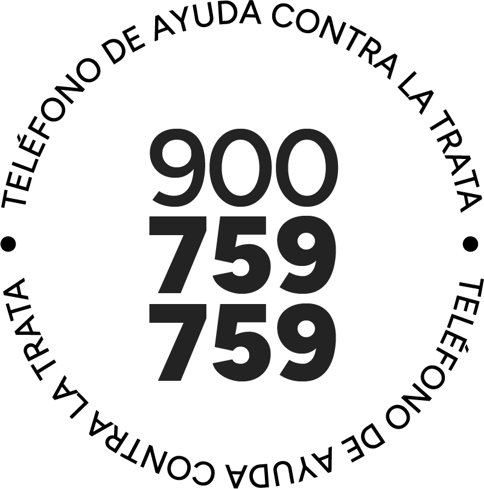

La acción
Captación, transporte, traslado, acogida o recepción de personas.

Eres víctima o sospechas de una potencial situación de trata. Describe la situación con el mayor detalle posible, incluyendo fechas, horas, ubicación exacta (país, ciudad, dirección, código postal y referencias), descripción de las personas implicadas y, si procede, matrículas u otros datos identificativos.
Si la situación ocurre en el ámbito digital, facilita el enlace de la publicación, los nombres de las cuentas implicadas y una breve descripción de lo sucedido. Todas las comunicaciones son confidenciales y puedes permanecer en el anonimato.